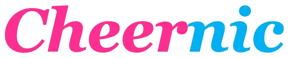
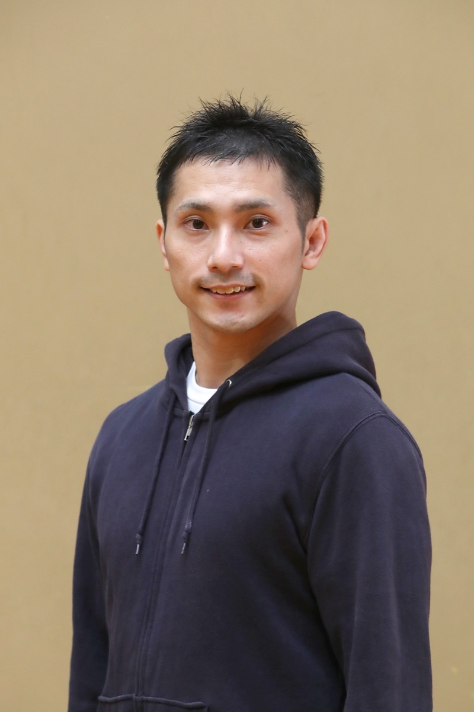
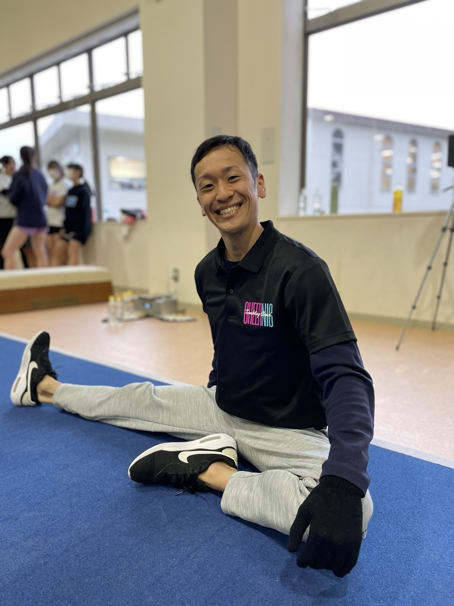

PRO COACHING PARTNER

スポーツバイオメカニクスに基づくチアタンブリングの専門プロコーチチーム。
協会の理念を共有し、全国のチアリーディング／チアダンスチームに訪問指導をお届けします。
Our Mission
タンブリングは、チアリーディング／チアダンスの華やかな表現を支える中核技術です。一方で、誤った指導は重大な事故につながる分野でもあります。
Cheernic（チアニック）は、スポーツバイオメカニクスに基づき、力学と解剖学で「なぜできない／なぜ危ない」を解き明かし、「だからこうする」を納得して練習できる指導を行います。経験や感覚だけに頼らず、根拠と理論に裏打ちされた指導を、選手と指導者の両方に届ける——それが私たちの一貫した姿勢です。
「安全で正しいタンブリングを、
全国の現場へ届けつづける。」
Coaches
タンブリングの最前線で長年指導を行ってきた2名のプロコーチが、現場であなたのチームを支えます。

一般社団法人 チアタンブリング協会 代表理事。元体操競技選手。チアリーディング／チアダンスの指導歴18年、株式会社代表取締役。バイオメカニクスに基づく段階的指導と、選手・指導者育成プログラムの設計・運営を担当。

ヘッドコーチ／テクニカルアドバイザー。体操競技国際指導ライセンス保持。体操・タンブリングの専門技術を体系化し、現場での実技指導と段階的なドリル設計を担当。多数のチームで技術向上をサポート。
What We Do
チームの目標とレベルに合わせ、現場で活きる指導をお届けします。
北海道から九州まで、全国のチアリーディング／チアダンスチームへ出張指導。チームの課題に合わせたオーダーメイドのプログラムをご提供します。
コーチ・指導者向けの講習会を開催。スポーツバイオメカニクスに基づく指導理論と、現場で使える観察ポイント・矯正ドリルをお伝えします。
栃木県足利市・佐野市の2拠点でレギュラーレッスンを開催。個人選手からチーム単位まで、現地での継続的な指導が可能です。
Track Record
Get In Touch
チームの目標と現状をヒアリングし、最適な指導プログラムをご提案します。
詳しい活動内容・お問い合わせは Cheernic 公式サイトをご覧ください。